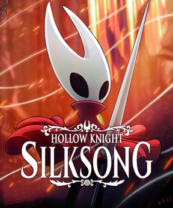
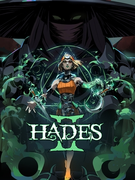

Released in 2025 created by team cherry over the course of 7 years, what was originally meant to be a dlc for their previous game Hollow Knight bloomed into what is widely considered to be one of the best indie games of the last 2 years.
This is an increadible metroid vania with amazing bossed, amazingly smooth movement, and a decently difficult campain.
Metroidvania
Difficult
Indie
Great Soundtrack
Souls-like

In 2024 the developer LocalThunk decided to release the greatest time waister of all time.
In this game you will play poker hands with the goal of winning enough chips to clear the blind (level).
Every poker hand has a different base mult (base multiplier) and every card have a base chip ammount.
After every blind you will enter a shop where you can buy several things, but the highlight among them is the jokers.
Every joker has a unique effect. They can be anything from adding mult when a condition if completed or does it regardless. Every joker works together to get a higher number.
This will be one of the most satisfying and adictive games you will ever play.
Card Game
Roguelike
Roguelike Deckbuilder
Deckbuilding

In 2024, developer Supergiant Games released the highly anticipated sequel to one of the greatest roguelikes of all time: Hades II.
In this game, you play as Melinoë, Princess of the Underworld, on a mission to defeat Chronos, the Titan of Time. Along your journey, you will battle through hordes of mythical enemies, powerful bosses, and dangerous environments inspired by Greek mythology.
Every run is different, with a variety of weapons, each offering unique playstyles and abilities. Along the way, you will receive boons from the Olympian gods, granting you powerful upgrades and special effects that can completely change how you fight. Combine different boons, weapons, and upgrades to create devastating builds and become stronger with every run.
Between runs, you can meet a variety of memorable characters, uncover secrets, gather resources, and upgrade your abilities to prepare for your next attempt.
This game Is also quite adictive and good for quick, 1 run sessions whenever its convinient
Action
Roguelike
Roguelite
Hack and Slash
Mythology

Over 10 years ago now, in 2016, developer Hello Games released No Man's Sky, an ambitious space exploration game.
In this game, you will explore an almost infinite universe filled with billions of procedurally generated planets, each with its own unique environments, creatures, plants, and resources. Your goal is to survive, explore, and uncover the mysteries hidden throughout the galaxy.
Every planet offers something different, from frozen wastelands and scorching deserts to lush alien jungles. You can gather resources, craft equipment, upgrade your technology, and build your own bases. You can even discover and collect different starships to travel between planets and explore the vastness of space.
Along your journey, you will encounter alien civilizations, uncover ancient ruins, engage in space battles, trade valuable resources, and discover the secrets of the universe. Whether you want to become a wealthy trader, a fearless explorer, a skilled fighter, or simply build your dream home on a distant planet, the choice is yours.
Open World
Space
Open World Survival Craft
Exploration

Slay the Spire is a game made in 2019 by developers Mega Crit about climbing a giant tower and killing monster
your journey begins at the bottom of a mysterious spire. As you make your way toward the summit, you'll encounter everything from ordinary enemies to enormous bosses that will put your strategies to the test.
Combat revolves around building a deck of cards, with each card offering different attacks, defenses, and abilities. But winning isn't just about having strong cards. You'll need to carefully manage your resources, plan your next moves, and figure out which cards work best together.
As you climb higher, you'll discover powerful relics, collect new cards, visit mysterious merchants, and make decisions that could either save your run or end it entirely. With multiple playable characters, each bringing their own unique mechanics and strategies, there's always another combination to experiment with.
And just when you think you've mastered the game, the Spire finds another way to humble you.
Open World
Space
Open World Survival Craft
Exploration